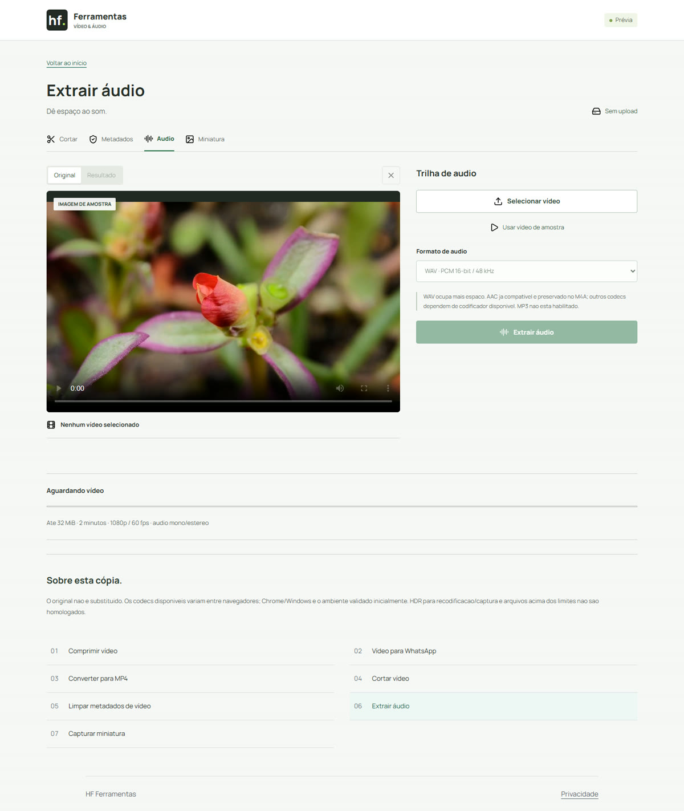

Áudio & imagem
Como extrair áudio de um vídeo
Escolha WAV ou M4A e confira se a trilha inteira foi preservada.
O formato precisa servir ao próximo uso
WAV gera PCM 16-bit a 48 kHz nesta versão. Ele costuma ocupar mais espaço e é a opção disponível para quem precisa desse tipo de entrada em outro programa. Converter para WAV não recupera detalhes que o som original já perdeu.
M4A guarda áudio AAC. Se a entrada já tem AAC compatível, essa trilha é copiada sem recodificação. Outros codecs dependem do codificador disponível no navegador. MP3 não é uma opção da ferramenta: renomear um M4A como .mp3 não converte o som.
Separe a trilha
- Abra Extrair áudio e selecione o vídeo. Ou use a amostra para conhecer o fluxo sem arquivo pessoal.
- Aguarde a análise. Uma entrada sem áudio informa essa condição e não libera uma trilha inventada.
- Escolha WAV ou M4A em Formato de áudio e clique em Extrair áudio.
- Reproduza o player de áudio do resultado, confira duração e use Baixar cópia. Abra também no programa de destino.
{kind=link}

Escute mais que os primeiros segundos
Confira o começo, uma parte intermediária e o encerramento. Se existe fala, veja se todas as frases esperadas estão presentes. Observe interrupções e se o programa de destino reconhece a duração correta.
Nos exemplos locais, M4A a partir de AAC, WAV a partir de AAC e WAV a partir de WebM/Opus passaram por decodificação completa e medição de sinal não silencioso. Esses testes verificam integridade técnica; não equivalem a uma escuta humana de qualidade.
Extração não isola uma voz
O resultado contém a trilha inteira, incluindo música, ruídos e conversas de fundo. Não é separação de instrumentos, limpeza de ruído nem transcrição. O arquivo original fica intacto.
A entrada inicial aceita áudio mono ou estéreo, em uma única trilha. Se você precisa escolher entre vários idiomas, trabalhar com multicanal ou arquivos longos, este fluxo ainda não foi homologado. Também revise nomes e endereços ditos em voz alta antes de compartilhar o áudio: retirar o vídeo não remove essas informações.
Escopo da verificação
Procedimentos conferidos nos controles atuais e testes locais do Chrome/Windows. Viewports mobile são emulados; aparelhos físicos e outros navegadores não estão homologados. Exemplos e capturas são do projeto, com amostras sintéticas ou autorizadas, sem dados de visitantes.
Fontes técnicas
Consultadas em 12/09/2026. Resultados numéricos e limites do portal vêm dos testes locais, não de uma garantia das fontes.